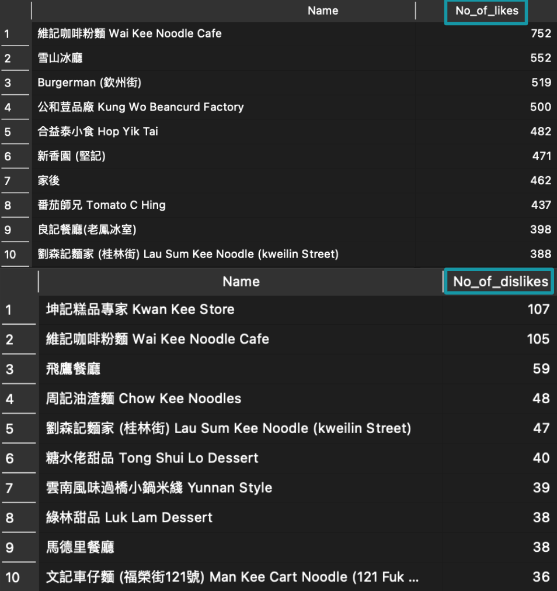
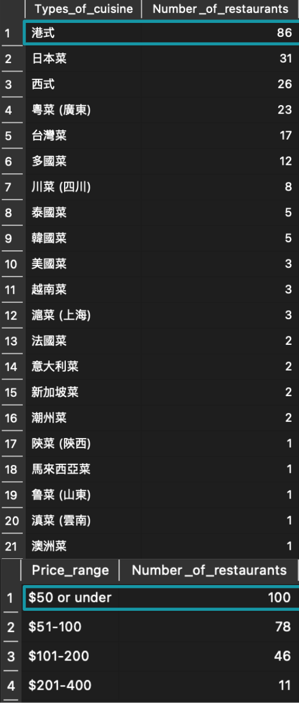

Assignment 2
For my second assignment, I collected data from Openrice, which is a food and restaurant guide website that operates in Hong Kong, Among all the districts in Hong Kong, I selected the place where I have lived for over 20 years - Sham Shui Po. You may find the page in Openrice here.
Parsehub was used to collect data from Openrice, Around 17 pages of restaurant information were collected from the website. After the scraping exercise, Open Refine was used to clean the data collected (e.g. to remove the blank entries). After data cleaning, 235 restaurants were selected to conduct data analysis. SQL was used to conduct the data analysis. I have used a few commands to find the top 10 restaurants with the most likes and top 10 restaurants with the most dislikes in Sham Shui Po. 2 restaurants were in the top 10 restaurants with the most likes and most dislikes. As both restaurants are popular in Sham Shui Po, more people visited the restaurants may leave more reviews (good or bad) towards restaurants based on their dining experiences. Therefore, the result is reasonable.
Apart from the above, I have also identified the most popular types of cuisine in Sham Shui Po by grouping all the same kinds of cuisine in one column. Hong Kong cuisine is the most popular type of cuisine as there are 86 Hong Kong cuisine restaurants out of 235 restaurants identified in Sham Shui Po. Moreover, I have also identified the majority of the price range for the restaurants in Sham Shui Po. The price range for 100 restaurants is $50 or below. It reflects the people who live in Sham Shui Po prefer affordable restaurants.
